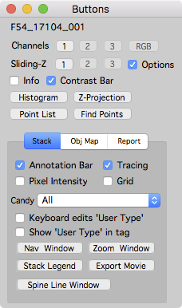
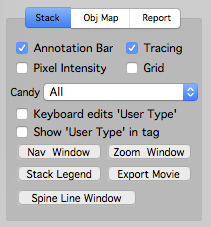
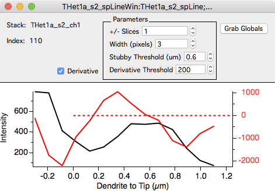
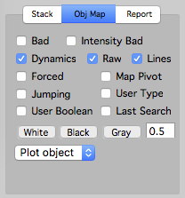
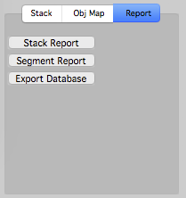

Buttons

The buttons window is an easy interface to control the dispay of stack and map plot windows.
Open the buttons window with the main menu ‘Map Manager - Buttons’ or use keyboard ctrl+1 (‘1’ is the number one).
Channels
The 1, 2, and 3 buttons will display the specified color channel.
The RGB button will display an RGB image for stacks with 2 or more color channels. The channel order/color is specified in ‘ Map Manager - options - stack display - channel order.
Sliding-Z
Create a sliding z-projection for the stack.
Turn on the ‘options’ checkbox to set the number of slices that contribute to each slice in the sliding-z projection and the type of projection. Available projections are: Maximal projection (default), Average Projection (good for time series), and SDEV Projection (the standard deviation projection).
Info
Toggle annotation info panel. This can also be done in a stack window with keyboard i.
Contrast bar
Toggle the stack window contrast bar. This can also be done in a stack window with keyboard c.
Histogram, Z-Projection, Point List, Find Points
Open a new window showing an image intensity histogram, a Z-Projection (with options), the Point List window, and the Find Points window.
Tabs
Stack Tab

The stack tab controls stack windows.
- Annotation Bar. Toggle the left annotation bar. The annotation bar can also be toggled with keyboard [.
- Tracing. Toggle the tracing on/off. This is useful to see portions of an image that might be obsured by annotations and to copy/paste raw images (without annotations) to other programs. The tracing can also be toggled with keyboard t.
- Pixel Intensity. Toggle the display of pixel intensity. Pixel intensities are show in the lower-left of a stack window (yellow text) as the mouse cursor is moved over an image.
- Grid. Toggle the display of a grid over a stack window. This is useful for scoring the number of annotations within a stack. The recipe is to annotate all objects within each square of the grid.
- Candy. Select the visual candy in a stack window. Options include: All, None, Scale, Scale + Label, Scale + Label + Axis. This can also be set in a stack window using keyboard shift+c.
- Keyboard edits ‘User Type’. When on, keyboard 0..9 will set the User Type for a selected annotation. When off (default), keyboard will change the displayed stack color channel.
- Show ‘User Type’ in tag. Toggle the display of user type in all annotation tags. More advances options can be set in the Stack Legend panel - tags section.
- Nav Window and Zoom Window. Open navigation and/or zoom window. See stack for more information.
- Stack Legend. Open a panel to configure stack image labels, annotation tags, scale bar, and more. See stack legend for more information.
- Export Movie. Exports a stack as a Quicktime or AVI movie. Useful for making presentations.

- Spine Line Window. Opens a new window and displays the pixel intensity profile and derivative of a spine from the connection point on the segment tracing to the spine head. The derivative is useful for setting a quantitative value for ‘mushroom’ spines.

Obj Map Tab
The Obj Map tab controls time-series plots (e.g. map plots).
- Bad. Toggle overlay of bad annotations. Bad annotations appear (by default) as white.
- Intensity Bad. Toggle overlay of intensity bad annotations. Intensity bad annotations appear (by default) as white. Tagging annotations as intensity bad will ignore the intensity analysis for a given annotation but keep it in the annotation dynamics calculation.
- Dynamics. Toggle dynamics colors. When off, all annotations will be show black. The dynamics color can also be toggled with keyboard d.
- Raw. Toggle annotation markers. Not very useful, should be called ‘Annotation’.
- Lines. NOT WORKING. Toggle segment tracing lines. Only applies to maps that have segment tracings.
- Forced. Toggle ‘forced’ annotations on/off. Forced annotations are shown with a blue circle. This is useful to see where the user had to manually specify corresponding annotations versus annotations that were automatically linked using right-click - Dynamics - Connect Objects To next.
- Map Pivot. Toggle the display of the annotation specified as a map pivot. This is only used for ‘otherROI’ and not used for spine annotations.
- Jumping. Not Used.
- User Type. Not used. Toggle the display of annotations tagged with a user type.
- User Boolean. Not used. Toggle the display of annotations tagged with a user boolean.
- Last Search. Toggle the display of annotations that were in the last search results.
- White / Black / Gray. Buttons to control the display of a map plot. The gray level can be set and is in the range of 0..1. This is useful for copy/paste a map plot into other programs.
- Plot Object. Choose the type of objects to display in a map-plot.

Report Tab
The report tab allows the generation of reports.